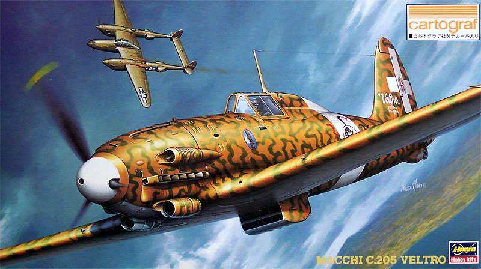
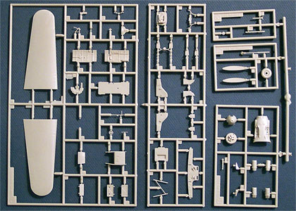
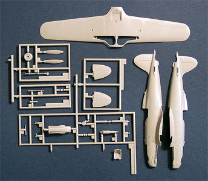
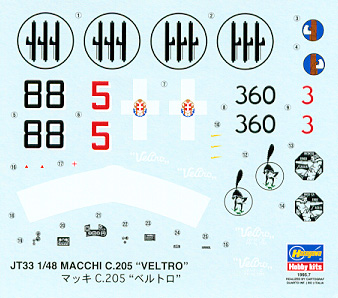
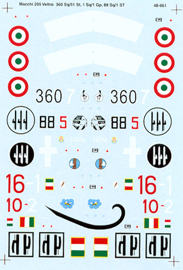

{kind=link}
{kind=link}
{kind=link}


Hasegawa 1/48 Scale Macchi MC.205 Veltro (Greyhound)

Kit #9133 MSRP $22.98
Images and text Copyright © 2004 by Matt Swan
Developmental Background
I’m a bit of a sports car fan, I currently drive an old Porsche (weather permitting) and have owned a few different little sports cars over the years. One thing that I discovered about twenty years ago was that the Italian car manufacture Fiat made some really nice looking sports cars but their engines really sucked. Apparently this is nothing new, it seems that the best Italian made fighters (by Fiat no less) during World War Two, while of beautiful design, used the more reliable German made engines.
The brainchild of Ing. Castoldi, the MC.205 "Veltro" was indisputably the best Italian fighter used during World War II. It was said that in the hands of a good pilot, it could defeat any allied plane. The MC.205V was a development of the MC.202 but since Italian aircraft manufacturers could not manage to produce engines of the performance required throughout World War II it was decided that the Mercedes Benz engine model DB 605 would be produced under license to power these thoroughbreds. Armed with 20mm cannons, it was intended as an interim fighter pending a redesign of the wing and fuselage. The plane flew first in 1942 and was starting to be incorporated into squadrons a year or so later. The MC.205 reached airfields in June 1943, with the first planes assigned to the 1st Stormo based on the island of Pantelleria and utilized over North Africa and in defense of the last convoys directed to Tunisia. The Veltro experienced excellent results against much larger enemy squadrons of Curtiss P-40s and Supermarine Spitfires. On the 2nd of August 1943 six MC.205s attacked a group of 20 P-38s and P-40s engaged in shooting down a Cant Z506 rescue plane; 6 of the Allied planes were lost and only one MC.205 was shot down.
The MC.205V was faster than the Re.2005 and the G.55 at medium and low altitude and was capable of meeting the P-51 Mustang on equal terms. However, at an altitude of over 8,000 meters its performance dropped considerably. The drawbacks of the "Veltro" were mostly due to the fact that the wings had been featuring more or less the same technical specifications since the Macchi C. 200 "Saetta" was produced. While the Veltro was considered the best Italian fighter in World War II it was too late to do any good for the Axis powers in the war. The plane never saw mass production because Italy fell shortly after production facilities began to gear up but after the war, 42 were delivered to Egypt, and these were used in the war with Israel of 1948-1949.
The plane represents the best of Italian aeronautical engineering during the war and demonstrated Italy’s ability to produce planes capable of combating the much more modern enemy aircraft. These planes could not be fully utilized due to the chronic shortage of engines and weapons and, most of all, low material resources especially toward the end of the war. Its maximum speed was 399 mph, range was 646 miles and its service ceiling was 37,090 feet. It was armed with 2 12.7mm Breda machine guns in the cowling and 2 wing mounted 20mm cannons. MC.205 production only reached a total of 262 aircraft by wars end.
The Kit
There are several things that first drew me to purchase this kit, first was that really cool camouflage scheme followed by its innately deadly look coupled with those really cool looking dual chin radiators. My appreciation for the kit continued to grow as I opened the box. As you can see from the box art at the beginning of this article there is some very nice graphics on the outside of the box and inside the box there is some very nice engineering.
The first thing we find in the box is a large poly bag containing 5 sprues of parts cast in light gray plastic. These parts all feature fine, crisply engraved panel lines, very minimal mold separation lines and virtually no flash. The eleven piece cockpit assembly offers some very nice detailing with individual sidewall panels, nice rudder bar, trim wheel and side panel. The worst thing about the cockpit is that once the fuselage is closed up you will not be able to see hardly any of this cool stuff. The main landing gear bay features some nice detailing as well, we have interior strut members, secondary door retract arms and detailed bulkheads.
The upper and lower service panels for the engine compartment are separate pieces so if you want to add a DB.605 engine kit surgery will be minimal. Overall there are 76 gray injection molded pieces. There is one additional plastic bag that contains a small sheet of decals and the single small sprue of clear parts. Here we have a two-piece canopy so it can be modeled open or closed, a reflector gun-sight and an extra armored windscreen that is not for this particular model. The kit contains a total of 80 pieces and only four of those are designated as not for this aircraft. During a session of dry fitting I found that the major components went together very well, the fuselage and wing meet up nicely and it does not look like much if any putty will be required for this kit.


Click on the above images to view larger pictures
Decals and Instructions
The instructions consist of a well done, four panel fold-out printed on both sides for eight panels of information. There is a nice historical background section in both Japanese and English followed by three panels of exploded view construction steps. These are well done, clearly laid out in a logical manner with plenty of color codes

and several inset detail drawings. One panel is devoted to a total parts layout and a painting key. Two panels are set aside for decal placement and camouflage patterns for the two aircraft featured on the decals sheet. The painting instructions give you both left and right profiles for the complicated smoke-ring pattern on both aircraft. One error in the decal instructions that is really pretty minor is the aircraft designations are swapped on the panels, the placement directions themselves are correct.
The decal sheet is fairly small giving markings for two aircraft, 88 Squadron Group 6 and 360 Squadron Group 155. They include a few service stencils and two options on the dash instruments. While the print registry looks to be right on the mark and the color density looks very good all the national markings look slightly oversized and I have to take issue with the “Fasces”. That’s the little axe like thing strapped to a bundle of poles in a blue circle. The marking itself has an interesting background going back to the days of the Romans and means that they had the right to command and interpret the flight of the birds but this decal looks kind of cartoonish and the blue is way too dark. Besides these issues the screening looks to be nice and thin and if they behave like other decals I have used from Hasegawa, the will probably lie down nicely and respond to setting solutions well.
Conclusions and Accessories

This is another nice kit to add to your collection, the engineering of the injection molded pieces is of the highest caliber, the instructions are clear and well laid out. The only short fall on this kit is the decals – they are oversized and the colors are suspect. The camouflage patterns presented in the kit are very eye-catching but there are several other interesting schemes done on this aircraft. I have referred to “The Hamlyn Concise Guide to Axis Aircraft of World War 2” and have found several of these other schemes one of which is a nightfighter scheme very similar to that worn by the Me-262B Night Fighter. To correct the decal issue I have acquired a set of Super Scale decals #48-861 (pictured to the left). This sheet gives us similar aircraft options as are available in the kit only with more accurately sized markings and better color on the ”Fasces”. It also includes markings for three other aircraft that operated out of Italy during 1944. The Super Scale instructions do not give the same quality of direction for camouflage markings as the Hasegawa instructions did but by referring to both you can pretty much piece it together.
Detail wise the basic kit is very good but if you are a AMS sufferer there is plenty of stuff out there on the aftermarket to help satisfy your needs. Cutting Edge carries a set of wheel masks for the kit, FM Models has a replacement cockpit set, Moskit offers replacement exhaust stacks and Tarmac has replacement Micro-Tubes for the 20mm cannons. Aires and Tauro both make some very nicely detailed Daimler-Benz 605 engines so if you want to open up the hood – these accessories are for you. There are more options in the decal department also, not only does Super Scale produce the set we just looked at but Sky Decals also offers a set that covers and even wider range than the Super Scale sheet does.
When all is said and done, it is a good kit all by itself or dressed up with all the extra goodies. I recommend this to be part of your collection – I have two.